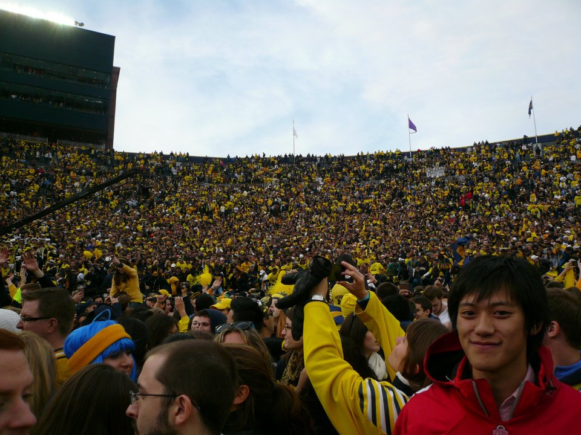

This picture sums me up pretty nicely.
I used to run ktru in Houston,
Texas. They're a damn good radio station. Check them out.
This website is just a placeholder, obviously. But email me
here anyways, homeslice.
Here's my favorite thing.